Capítulo 44 Gráficos (R base)
O R oferece uma variedade de funções para criar gráficos estatísticos básicos e personalizá-los de acordo com as necessidades da análise. A criação de gráficos é uma parte essencial da análise de dados, pois permite visualizar padrões, tendências e distribuições de forma intuitiva.
44.1 Gráfico de Barras
Gráfico de barras: Um gráfico de barras consiste em barras verticais ou horizontais, onde cada barra representa uma categoria e sua altura (ou comprimento) indica a frequência (absoluta ou relativa) dessa categoria. A largura das barras é constante e não possui significado estatístico.
# Sintaxe
barplot(altura,
names.arg = NULL,
main = NULL,
xlab = NULL,
ylab = NULL,
col = NULL,
beside = FALSE)altura: Vetor ou matriz que define a altura das barras. Pode ser um vetor numérico (para um gráfico simples) ou uma matriz (para gráficos empilhados ou agrupados).names.arg: Define os rótulos que serão exibidos no eixo x para cada barra.main: Título principal do gráfico.xlabeylab: Rótulos dos eixos x e y, respectivamente.col: Cor ou vetor de cores das barras.beside: Controla se as barras devem ser exibidas lado a lado (TRUE) ou empilhadas (FALSE).
# Dados de exemplo: cores favoritas
cores <- c("Azul", "Vermelho", "Verde", "Azul", "Verde",
"Vermelho", "Azul", "Verde", "Azul")
# Calcular as frequências absolutas
frequencia_absoluta <- table(cores)
# Criar o gráfico de barras com frequências absolutas
barplot(frequencia_absoluta,
main = "Gráfico de Barras",
xlab = "Cor",
ylab = "Frequência Absoluta",
col = c("blue", "green", "red"),
border = "black") 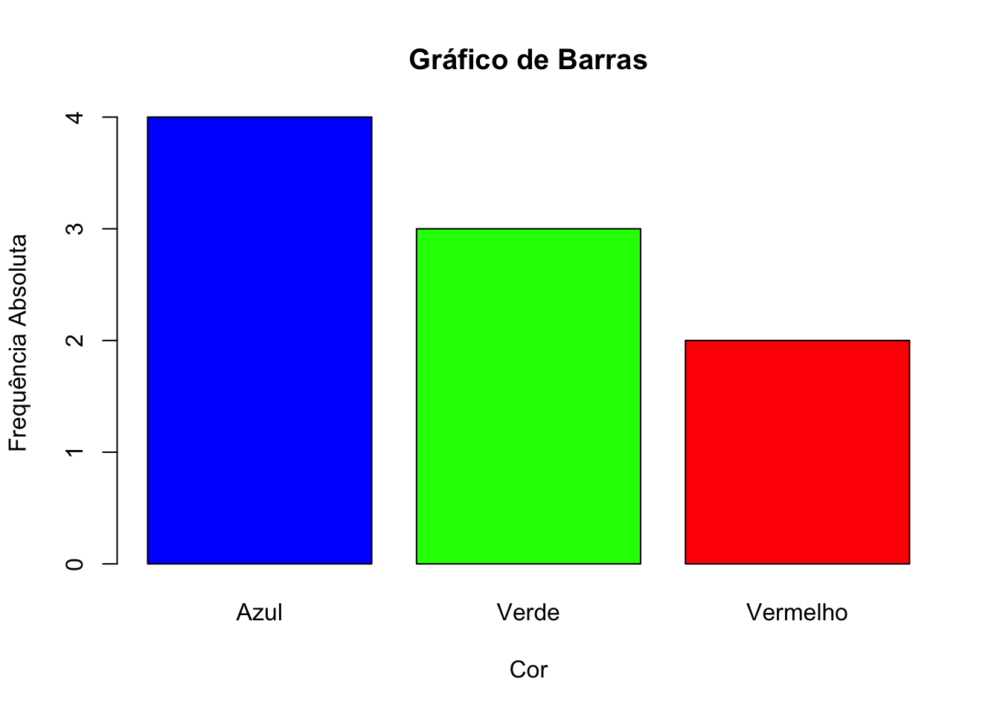
Para ter o gráfico com as frequências relativas fazemos:
# Calcular as frequências relativas
frequencia_relativa <- frequencia_absoluta / length(cores)
# Criar o gráfico de barras com frequências relativas
barplot(frequencia_relativa,
main = "Gráfico de Barras",
xlab = "Cor",
ylab = "Frequência Relativa",
col = c("blue", "green", "red"),
border = "black") 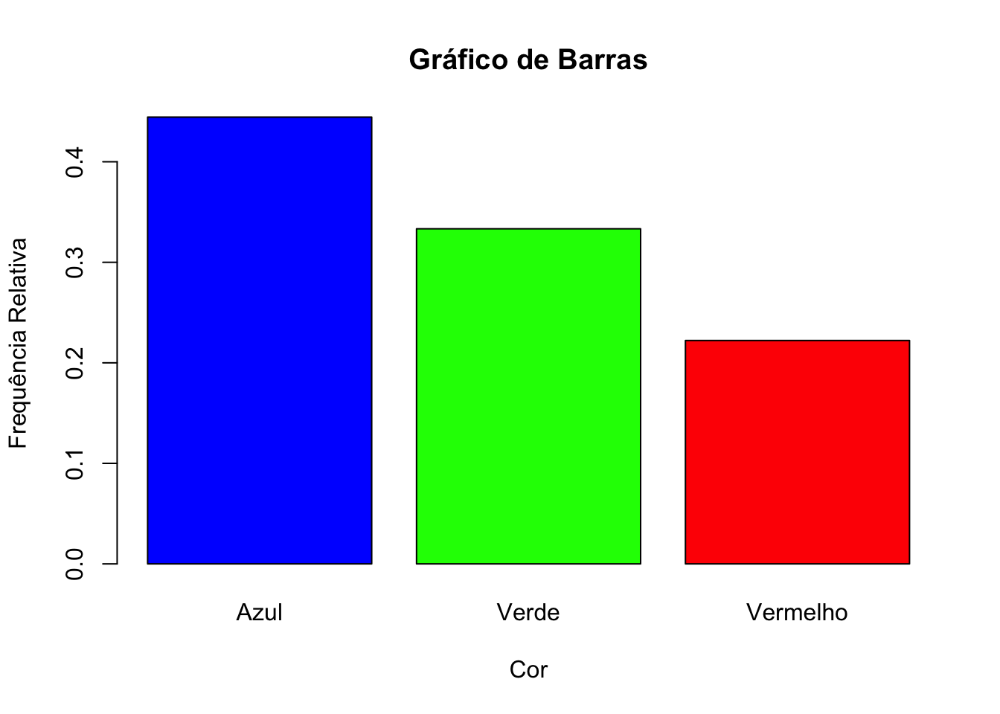
Personalização de Gráficos de Barras
Pode personalizar ainda mais os gráficos de barras usando argumentos
como horiz (para gráficos de barras horizontais), e beside (para
barras lado a lado).
# Gráfico de barras horizontal
barplot(frequencia_absoluta,
main = "Gráfico de Barras Horizontal",
xlab = "Frequência Absoluta",
ylab = "Cor",
col = c("blue", "green", "red"),
horiz = TRUE)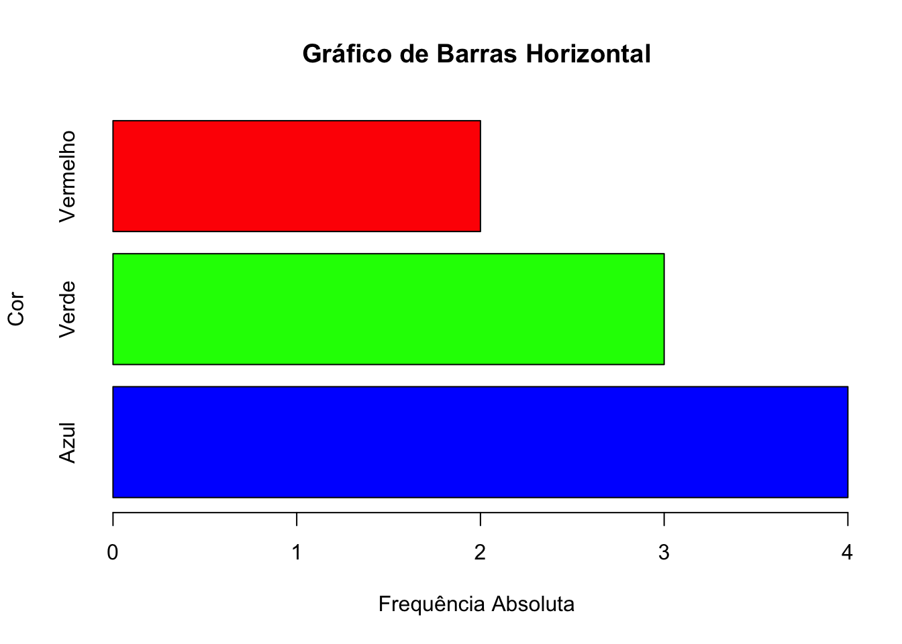
Gráfico de Barras Agrupadas
Podemos também gerar gráficos de barras que comparam mais de uma variável. Neste exemplo, vamos comparar o número de amostras de dois tipos de rochas em três diferentes regiões geográficas.
# Dados: contagem de amostras por tipo de rocha e região
regioes <- c("Região 1", "Região 2", "Região 3")
granito <- c(15, 10, 25)
basalto <- c(20, 15, 10)
# Criando uma matriz para agrupar os dados
dados_rochas <- rbind(granito, basalto)
# Gerando o gráfico de barras agrupadas
barplot(dados_rochas,
beside = TRUE,
names.arg = regioes,
col = c("lightblue", "lightcoral"),
legend.text = c("Granito", "Basalto"),
main = "Comparação de Amostras de Rochas por Região",
xlab = "Regiões",
ylab = "Quantidade de Amostras")
Neste exemplo, usamos rbind() para agrupar os dados e o argumento beside = TRUE para gerar barras lado a lado para comparação entre “Granito” e “Basalto”. O parâmetro legend.text cria uma legenda para identificar cada cor de barra.
Gráfico de Barras Empilhado
Para gerar um gráfico de barras empilhado em vez de agrupado, basta remover o argumento beside = TRUE. No gráfico empilhado, as barras de diferentes categorias serão colocadas uma em cima da outra em vez de lado a lado.
# Dados: contagem de amostras por tipo de rocha e região
regioes <- c("Região 1", "Região 2", "Região 3")
granito <- c(15, 10, 25)
basalto <- c(20, 15, 10)
# Criando uma matriz para agrupar os dados
dados_rochas <- rbind(granito, basalto)
# Gerando o gráfico de barras empilhadas
barplot(dados_rochas,
names.arg = regioes,
col = c("lightblue", "lightcoral"),
legend.text = c("Granito", "Basalto"),
main = "Comparação de Amostras de Rochas por Região",
xlab = "Regiões",
ylab = "Quantidade de Amostras")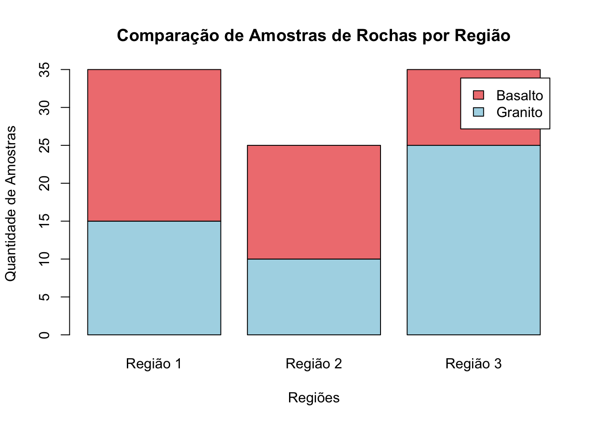
44.2 Gráfico Circular (Pizza)
Gráfico circular (pizza): Mostra a proporção de diferentes categorias em relação ao total. Cada fatia representa uma categoria e o tamanho de cada fatia é proporcional à sua porcentagem.
x: Um vetor numérico com os valores de cada fatia. Eles podem ser absolutos, e a funçãopie()calcula automaticamente a proporção entre eles.labels: Um vetor de rótulos para cada fatia. Se não for especificado, o R usará os valores dexcomo rótulos.main: Título do gráfico.col: Um vetor de cores para cada fatia.radius: Ajusta o tamanho do gráfico. O valor padrão é 1, e valores menores ou maiores diminuem ou aumentam o tamanho do gráfico.
# Criar gráfico circular
pie(frequencia_relativa,
main = "Gráfico Circular (Pizza)",
col = c("blue", "green", "red"),
labels = paste(names(frequencia_relativa),
round(frequencia_relativa * 100, 1), "%"))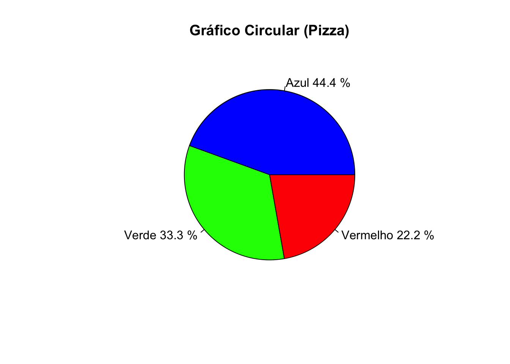
44.3 Histograma
Histograma: é uma representação gráfica dos dados em que se marcam as classes (intervalos) no eixo horizontal e as frequências (absuluta ou relativa) no eixo vertical.
Cada retângulo corresponde a uma classe.
A largura de cada retângulo é igual à amplitude da classe.
Se as classes tiverem todas a mesma amplitude, a altura do retângulo é proporcional à frequência.
Por default, o R utiliza a frequência absoluta para construir o
histograma. Se tiver interesse em representar as frequências relativas,
utilize a opção freq=FALSE nos argumentos da função hist(). O padrão
de intervalo de classe no R é \((a, b]\).
# Sintaxe
hist(x, breaks = "Sturges",
main = NULL,
xlab = NULL,
ylab = NULL,
col = NULL,
border = NULL)x: Um vetor numérico com os dados para criar o histograma.breaks: Controla o número de intervalos ou “bins” do histograma. Pode ser um número específico ou um método (ex.: “Sturges”, “Scott”, “FD”).main: Define o título do gráfico.xlab: Rótulo para o eixox.ylab: Rótulo para o eixoy.col: Cor das barras do histograma.border: Cor das bordas das barras.
# Dados referentes à massa (em kg) de 40 bicicletas
bicicletas <- c(4.3,6.8,9.2,7.2,8.7,8.6,6.6,5.2,8.1,10.9,7.4,4.5,3.8,7.6,6.8,7.8,8.4,7.5,10.5,6.0,7.7,8.1,7.0,8.2,8.4,8.8,6.7,8.2,9.4,7.7,6.3,7.7,9.1,7.9,7.9,9.4,8.2,6.7,8.2,6.5)
h <- hist(bicicletas,
breaks = "Sturges",
main = "Histograma Bicicletas",
xlab = "Massa (kg)",
ylab = "Frequência absoluta",
col = "lightblue",
border = "black",
ylim = c(0,12),
labels = TRUE)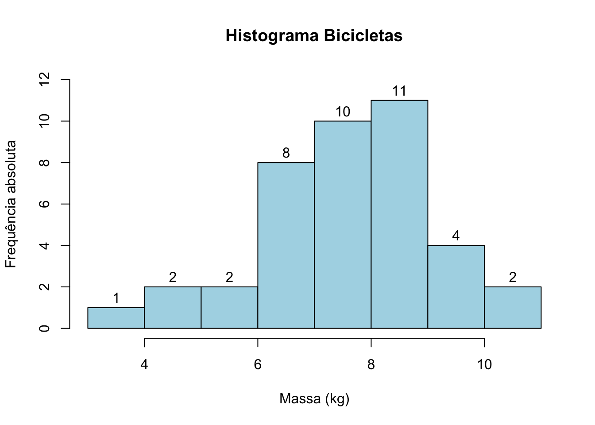
# Pontos limites das classes
h$breaks
## [1] 3 4 5 6 7 8 9 10 11
# O comando h$counts retorna um vetor com as frequências absolutas dentro de cada classe
h$counts
## [1] 1 2 2 8 10 11 4 2# Histograma com frequência relativa
hist(bicicletas,
main = "Histograma",
xlab = "Massa (kg)",
ylab = "Frequência relativa",
freq = FALSE,
col = "lightblue",
border = "black",
labels = TRUE)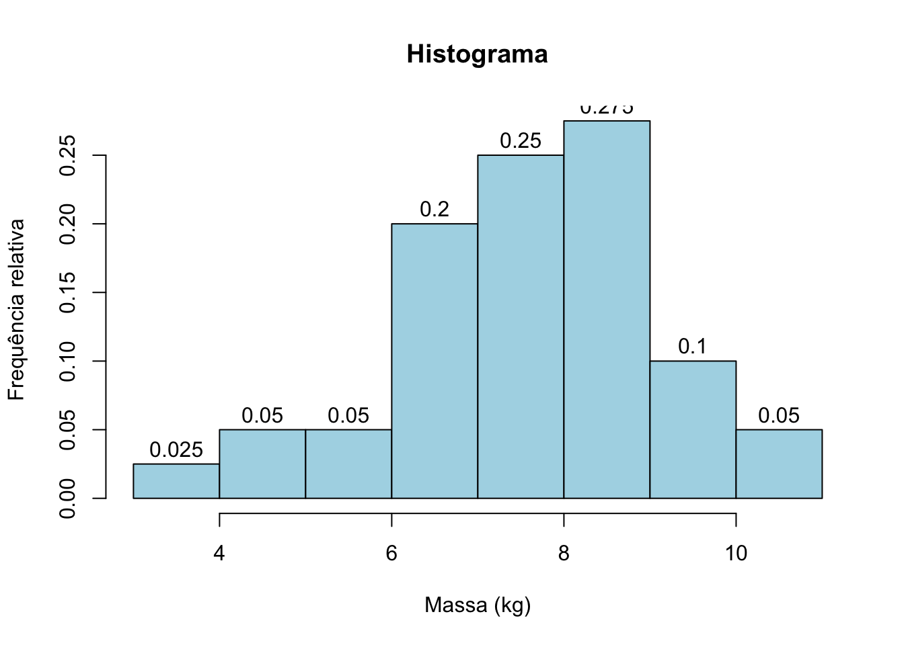
Pode controlar o número de intervalos (bins) usando o argumento
breaks. Por exemplo, breaks = 5 divide os dados em 5 intervalos.
Podemos adicionar também uma curva de densidade em cima do histograma.
# Histograma com frequência relativa
hist(bicicletas,
main = "Histograma",
xlab = "Massa (kg)",
ylab = "Frequência relativa",
freq = FALSE,
col = "lightblue",
border = "black",
labels = TRUE)
# Adicionando uma curva de densidade em cima do histograma
lines(density(bicicletas), col="red", lwd=2)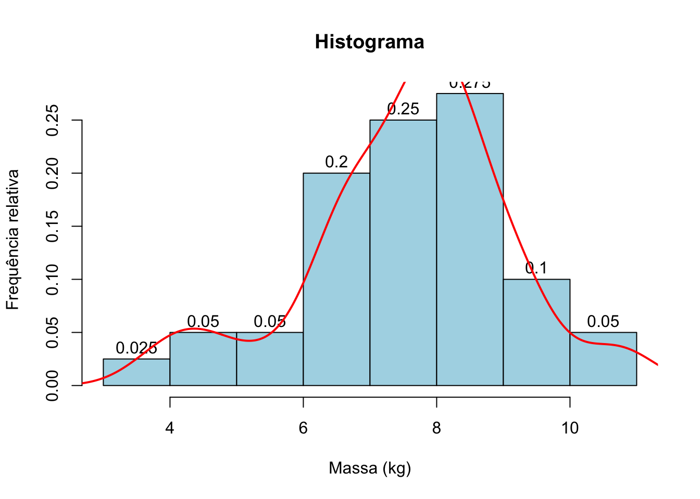
44.4 Box-plot
Box-plot (Caixa de Bigodes): O box-plot é uma representação gráfica que resume a distribuição de uma variável através de cinco estatísticas principais: mínimo, primeiro quartil (Q1), mediana (Q2), terceiro quartil (Q3) e máximo. Também pode mostrar outliers (valores atípicos).
# Sintaxe
boxplot(x,
main = NULL,
xlab = NULL,
ylab = NULL,
col = NULL,
border = NULL,
horizontal = FALSE)x: Vetor numérico, matriz ou lista de dados numéricos para criar o boxplot.main: Define o título do gráfico.xlabeylab: Rótulos para os eixos x e y, respectivamente.col: Cor do preenchimento da caixa.border: Cor da borda do boxplot.horizontal: Define se o boxplot será horizontal (TRUE) ou vertical (FALSE, padrão).
# Box-plot vertical
boxplot(bicicletas,
main = "Box-plot Vertical",
xlab = "Bicicletas",
ylab = "Massa (Kg)",
col = "lightblue",
border = "darkblue")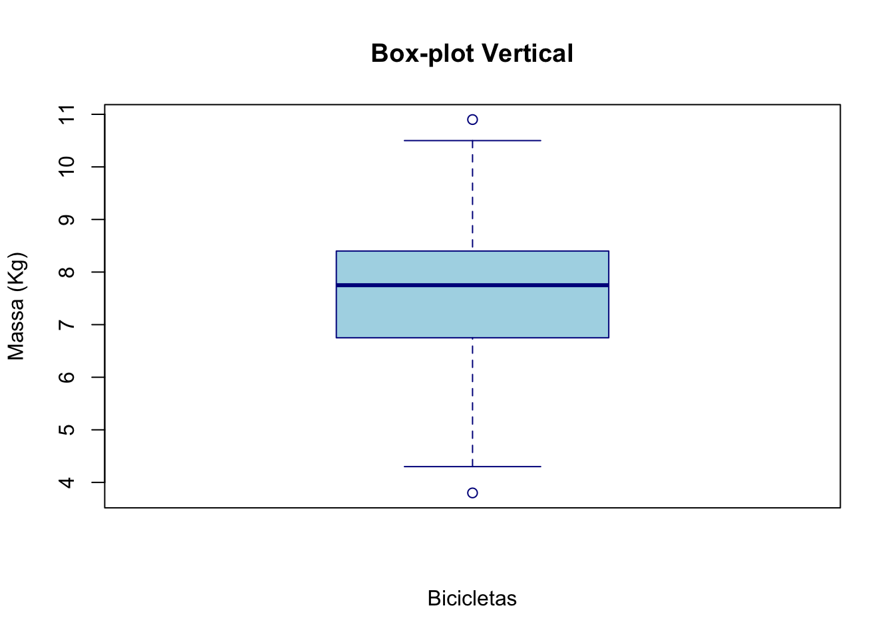
# Box-plot horizontal
boxplot(bicicletas,
main = "Box-plot Horizontal",
xlab = "Massa (Kg)",
ylab = "Bicicletas",
col = "lightblue",
border = "darkblue",
horizontal = TRUE)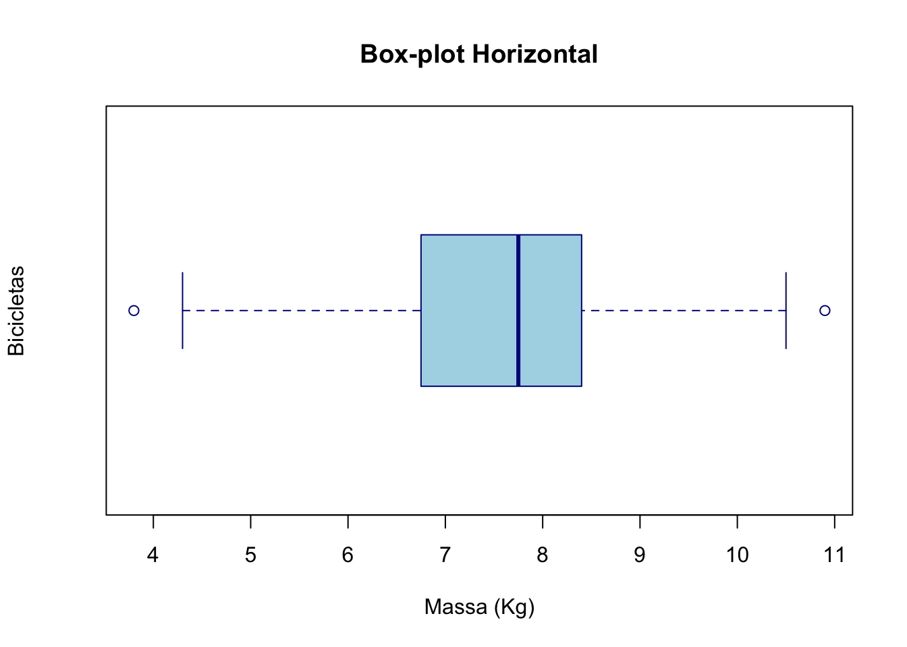
Pode comparar a distribuição de múltiplas variáveis lado a lado com
box-plots. Use a função par() para ajustar o layout gráfico.
# Ajuste do layout gráfico
par(mfrow = c(1, 2))
# Box-plot vertical e horizontal lado a lado
boxplot(bicicletas, main = "Box-plot Vertical", col = "red")
boxplot(bicicletas, main = "Box-plot Horizontal", col = "green", horizontal = TRUE)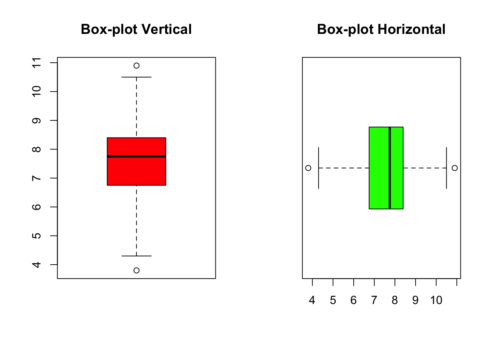
Quando temos dados organizados por categorias, podemos usar um boxplot para compará-los:
# Dados categorizados
grupo_A <- rnorm(50, mean = 60, sd = 10)
grupo_B <- rnorm(50, mean = 50, sd = 15)
grupo_C <- rnorm(50, mean = 55, sd = 5)
# Boxplot com múltiplas categorias
boxplot(grupo_A, grupo_B, grupo_C,
names = c("Grupo A", "Grupo B", "Grupo C"),
main = "Boxplot por Grupo",
ylab = "Valores",
col = c("lightgreen", "lightcoral", "lightblue"))Usando o conjunto de dados iris, vamos criar um box-plot simples da
variável Sepal.Length.
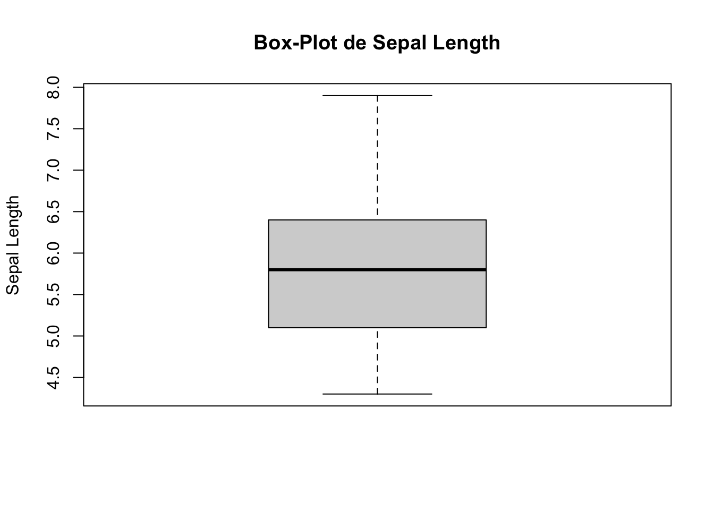
Vamos criar agora um box-plot da variável Sepal.Length agrupado por
espécie de flor (Species) no conjunto de dados iris.
boxplot(Sepal.Length ~ Species,
data = iris,
main = "Box-Plot de Sepal Length por Espécie",
xlab = "Espécie",
ylab = "Sepal Length")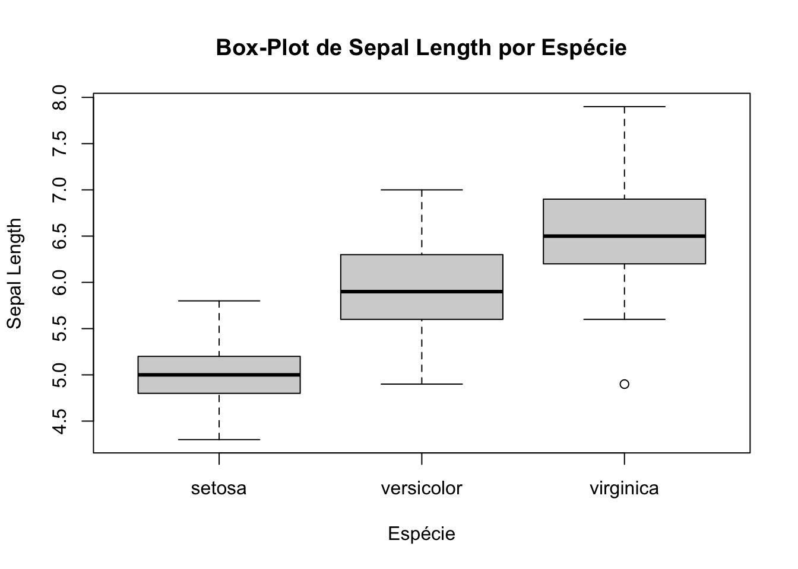
44.5 Gráfico de Dispersão
Gráfico de Dispersão (Scatter Plot): Útil para visualizar a relação entre duas variáveis quantitativas. É uma boa ferramenta para identificar correlações, tendências e outliers.
# Sintaxe
plot(x, y,
main = NULL,
xlab = NULL,
ylab = NULL,
col = NULL,
pch = NULL,
cex = 1,
xlim = NULL,
ylim = NULL)xey: Vetores numéricos com as coordenadas dos pontos no eixo x e y.main: Título do gráfico.xlabeylab: Rótulos dos eixos x e y.col: Cor dos pontos. Pode ser um único valor ou um vetor de cores.pch: Formato dos pontos (e.g., pch = 16 para pontos preenchidos).cex: Tamanho dos pontos.xlimeylim: Limites dos eixos x e y, respectivamente.
# Dados de exemplo
x <- rnorm(100)
y <- x + rnorm(100, sd = 0.5)
# Criar gráfico de dispersão
plot(x, y,
main = "Gráfico de Dispersão",
xlab = "Variável X",
ylab = "Variável Y",
col = "blue",
pch = 19)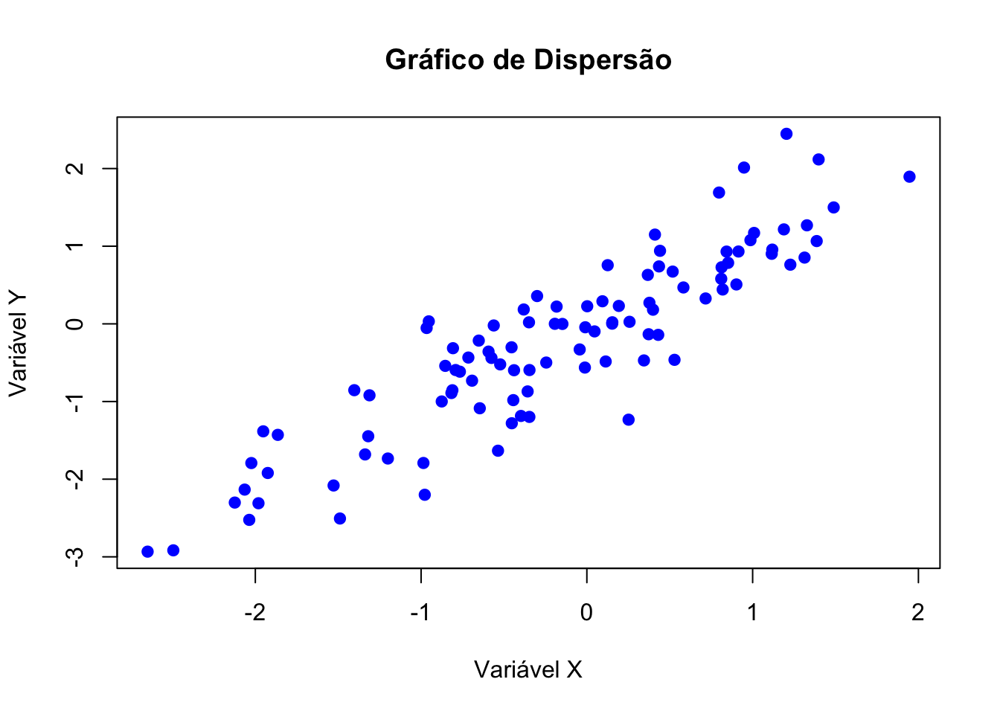
Gráfico de dispersão com regressão.
# Criar gráfico de dispersão
plot(x, y,
main = "Gráfico de Dispersão",
xlab = "Variável X",
ylab = "Variável Y",
col = "blue",
pch = 19)
abline(lm(y~x), col="green", lwd=2)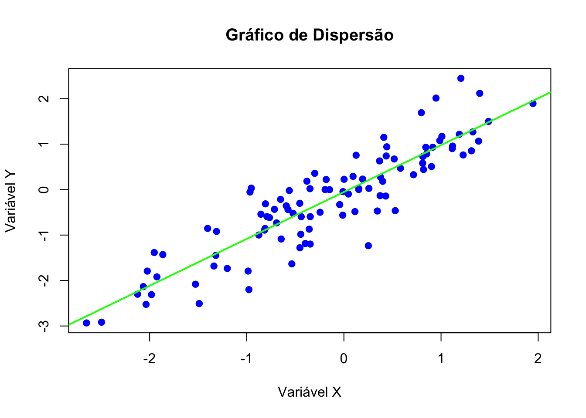
Se você tiver grupos de dados diferentes, pode diferenciá-los por cores:
# Dados com dois grupos
set.seed(123)
x1 <- rnorm(50, mean = 5)
y1 <- 3 * x1 + rnorm(50)
x2 <- rnorm(50, mean = 7)
y2 <- 3 * x2 + rnorm(50)
# Gráfico de dispersão com diferentes cores
plot(x1, y1,
main = "Gráfico de Dispersão com Grupos",
xlab = "Eixo X",
ylab = "Eixo Y",
col = "red", pch = 16)
points(x2, y2, col = "blue", pch = 16)
legend("topright", legend = c("Grupo 1", "Grupo 2"), col = c("red", "blue"), pch = 16)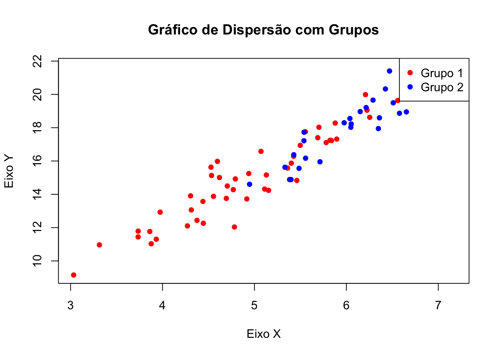
44.6 Gráfico de Linhas
Gráfico de Linhas: É usado para mostrar informações de séries temporais ou tendências ao longo de intervalos contínuos, como o tempo.
# Sintaxe
plot(x, y,
type = "l",
main = NULL,
xlab = NULL,
ylab = NULL,
col = NULL,
lty = 1,
lwd = 1,
xlim = NULL,
ylim = NULL)xey: Vetores numéricos contendo as coordenadas dos pontos ao longo do eixo x e y.type = "l": Define o tipo de gráfico como “linha” (outros valores podem ser"p"para pontos,"b"para linhas e pontos, etc.).main: Título do gráfico.xlabeylab: Rótulos dos eixos x e y.col: Cor da linha.lty: Tipo de linha (e.g., 1 para linha contínua, 2 para linha tracejada).lwd: Espessura da linha.xlimeylim: Limites dos eixos x e y, respectivamente.
# Dados de exemplo
tempo <- 1:10
valores <- c(3, 5, 7, 9, 11, 10, 8, 6, 4, 2)
# Criar gráfico de linhas
plot(tempo, valores,
type = "o",
main = "Gráfico de Linhas",
xlab = "Tempo",
ylab = "Valores",
col = "blue",
lwd = 1,
pch = 19)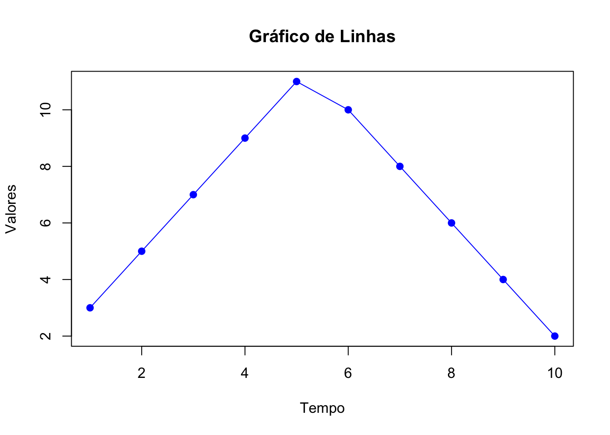
44.7 Exercícios
1. Usando o dataset iris, crie um gráfico de barras para mostrar a
contagem de cada espécie de flor.
- Nome do gráfico: Contagem Espécies
- Eixo x: Espécie
- Eixo y: Frequência Absoluta
- Cores das barras: Azul, Verde, Amarelo
Refaça o gráfico de barras considerando agora a frequência relativa.
2. Utilizando o dataset airquality, crie um gráfico de barras para
mostrar a média de temperatura (Temp) por mês. Dica: use a função
tapply() para encontrar a temperatura média em cada mês.
- Nome do gráfico: Média de Temperatura por Mês
- Eixo x: Mês
- Eixo y: Temperatura Média (°F)
- Cor: Azul
3. Crie um gráfico de pizza com as diferentes espécies de flores no
dataset iris. Adicione ao gráfico o nome das espécies e a percentagem.
4. Utilizando o dataset Titanic, crie um gráfico de pizza que
mostre a proporção de sobreviventes e não sobreviventes. Dica:
Transforme Titanic num data frame.
5. Crie um histograma para a variável Sepal.Length. Em seguida,
personalize o histograma com cores, ajuste o número de “bins”
(intervalos) e adicione um título e rótulos aos eixos.
6. Um pesquisador está a estudar a distribuição de alturas de plantas em duas espécies diferentes: Espécie A e Espécie B. Ele coletou 100 amostras de altura para cada espécie e tem como objetivo criar histogramas para comparar as distribuições de altura entre as duas espécies.
- Crie dois vetores de 100 alturas (em cm) para as espécies A e B. Use
rnorm()para gerar os dados com médias e desvios padrão diferentes.
# Gerando os dados
altura_A <- rnorm(100, mean = 150, sd = 10)
altura_B <- rnorm(100, mean = 160, sd = 15)Gere dois histogramas separados, um para cada espécie, e compare as distribuições de altura.
Altere as cores dos histogrmas. Use
col = rgb(1, 0, 0, 0.5)para o primeiro histograma ecol = rgb(0, 0, 1, 0.5)para o segundo histograma.Ajuste os histogramas para serem sobrepostos usando a função
hist()com o parâmetroadd = TRUE.Adicione a legenda
legend("topright", legend = c("Espécie A", "Espécie B"), fill = c(rgb(1, 0, 0, 0.5), rgb(0, 0, 1, 0.5)))7. Um professor aplicou um exame a uma turma de 200 alunos e quer analisar a distribuição das notas. O objetivo do professor é criar um histograma para visualizar a distribuição das notas e calcular algumas estatísticas descritivas (média, mediana e desvio padrão).
- Crie um vetor de 200 valores, representando as pontuações dos alunos (notas de 0 a 20).
Gere um histograma para as notas.
Calcule a média, mediana e desvio padrão das notas.
Adicione a média e a mediana diretamente no gráfico, usando o comando
abline().Use a legenda
legend("topright", legend = c(paste("Média:", round(media_nota, 2)),
paste("Mediana:", round(mediana_nota, 2)),
paste("Desvio Padrão:", round(desvio_nota, 2))),
bty = "n")8. Utilizando o dataset airquality, crie histogramas para a
variável Ozone separadamente para cada mês (de maio a setembro).
Ajuste o layout para mostrar os histogramas lado a lado e compare a
distribuição dos níveis de ozônio ao longo dos meses.
- Carregue o dataset airquality.
- Crie um histograma para a variável
Ozonepara cada mês. - Use o comando
par(mfrow=c(3, 2))para mostrar os gráficos lado a lado e comparar.
9. Utilizando o dataset iris crie um box-plot para comparar a
distribuição do comprimento da pétala (Petal.Length) entre as
diferentes espécies.
Carregue o dataset
iris.Crie um box-plot para a variável
Petal.Length, agrupando os dados pelas diferentes espécies (Species).Personalize o gráfico com cores diferentes para cada grupo e adicione títulos e rótulos.
10. Utilizando o dataset airquality crie um box-plot para comparar
a distribuição dos níveis de ozônio (Ozone) para os diferentes meses.
Observe como os níveis de ozônio variam ao longo do tempo.
Carregue o dataset airquality.
Crie um box-plot para os níveis de ozônio (
Ozone), agrupando os dados por mês (Month).Adicione uma linha horizontal indicando o valor mediano global dos níveis de ozônio. Dica: use a função
abline().
11. Estudando a relação entre altura e peso de um grupo de pessoas.
- Crie um vetor
alturacom 30 valores aleatórios entre 150 e 200 cm (userunif()). - Crie um vetor peso com 30 valores aleatórios entre 50 e 90 kg, ajustando-o para estar aproximadamente proporcional à altura. Use
peso <- altura * 0.4 + runif(30, -5, 5). - Use
plot()para criar um gráfico de dispersão com altura no eixo x e peso no eixo y. - Adicione rótulos (xlab, ylab) e um título (main) ao gráfico.
- Qual é a tendência visual entre altura e peso? Comente sobre a correlação entre as duas variáveis.
12. Analisando o crescimento de uma população ao longo de 20 anos.
- Crie um vetor
anoscom valores de 2000 a 2019. - Crie um vetor
populacaosimulando o crescimento populacional a partir de 100.000 pessoas em 2000 e um crescimento de 2% ao ano. Adicione um pequeno fator aleatório para representar flutuações. Usepopulacao <- 100000 * cumprod(1.02 + runif(20, -0.01, 0.01)). - Crie um gráfico de linha para mostrar o crescimento populacional ao longo dos anos.